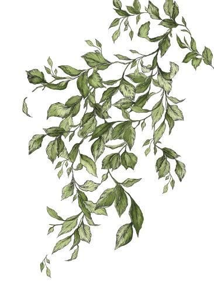
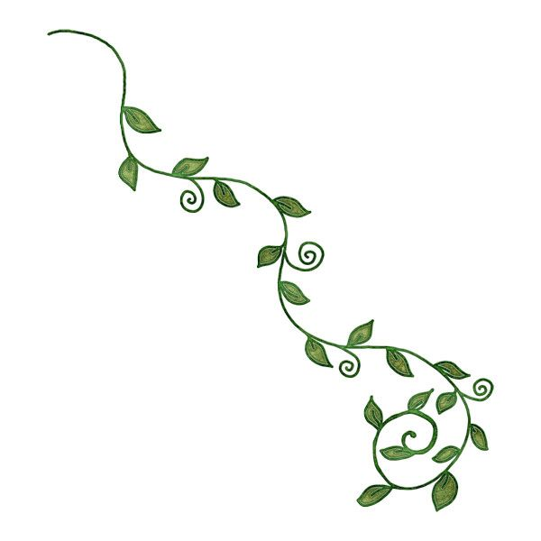
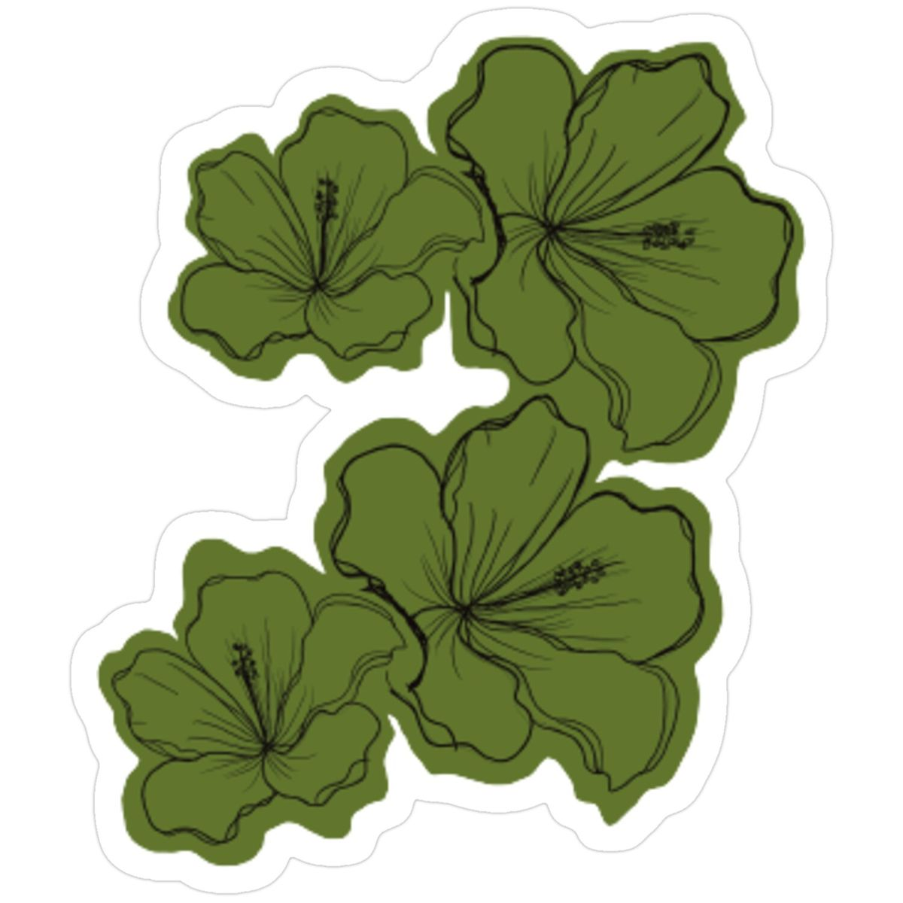
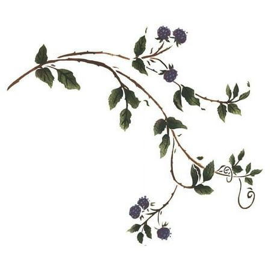

<!doctype html> 
<html xmlns="http://www.w3.org/1999/xhtml" lang="en-EN"> 
    <head>
        <!-- All techy stuff goes here, inside HEAD -->
         <meta charset="UTF-8"> 
         <meta name="viewport" content="width=device-width, initial-scale=1.0">
        <title>Luna's ART101 Homepage</title>
        <link href="env03.css" rel="stylesheet" type="text/css" /> 
        <!-- Link to external CSS file -->
         <link rel="stylesheet" href="env03.css">
         <!-- jQuery library -->
          <script src="https://code.jquery.com/jquery-3.7.1.min.js"></script>
          <!-- Link to external JavaScript file-->
           <script src="env03.js" DEFER></script>
    </head> 

    <body> 
        <!--- The Page Content goes in between <body> ... </body> tags --->
<div id="output"></div>

 </html> 
  
<h1> Welcome to the Wonderful land of Luna's mind... </h1> 
<p>This is where all of my whimsical creations take place and sometimes tend to escape from ones mind. Whether it is through my great ancestors or direct family members, their own creations are direct inspirations to my work of art. They tend to blend through my work whether I like it or not (even through this webpage). They even sometimes get blury and tend to be stolen throughout history from other people. This one I like to call the Never Ending Theft...
</p>
    

</body> 